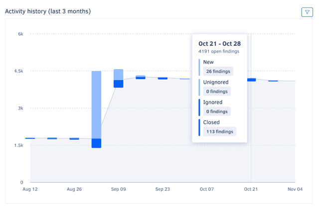
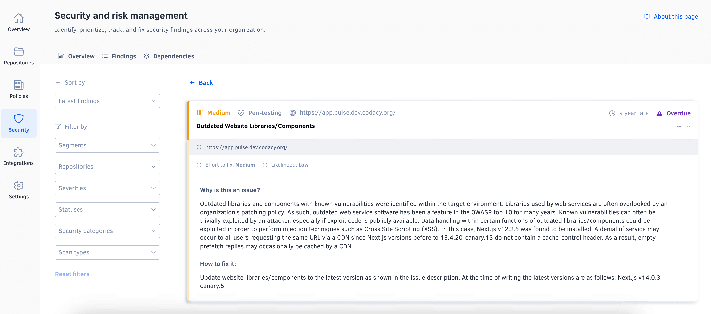
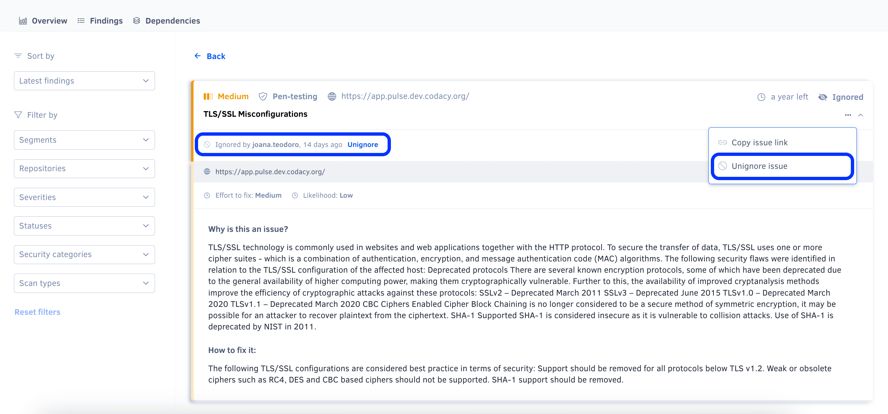
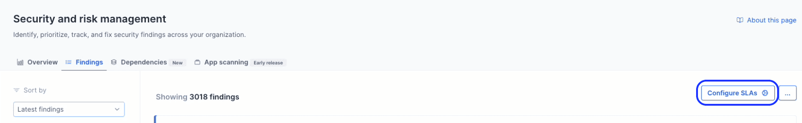
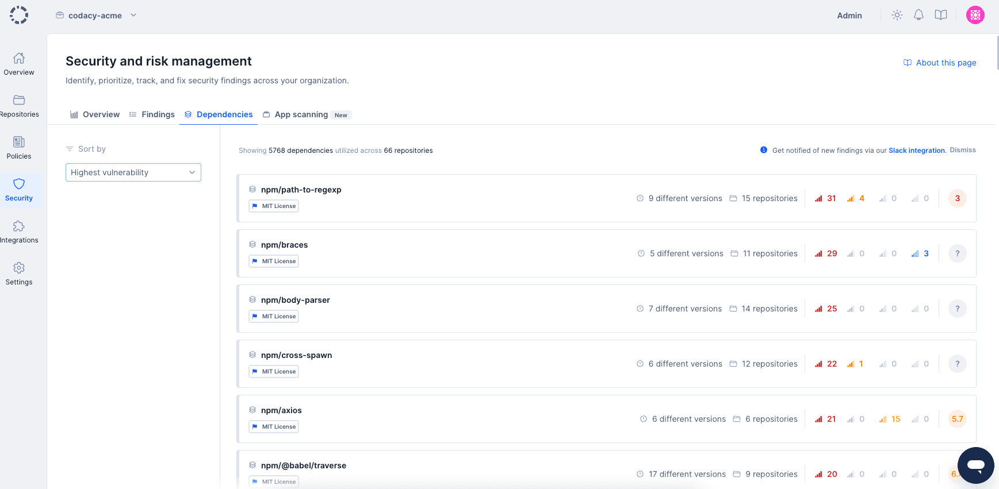
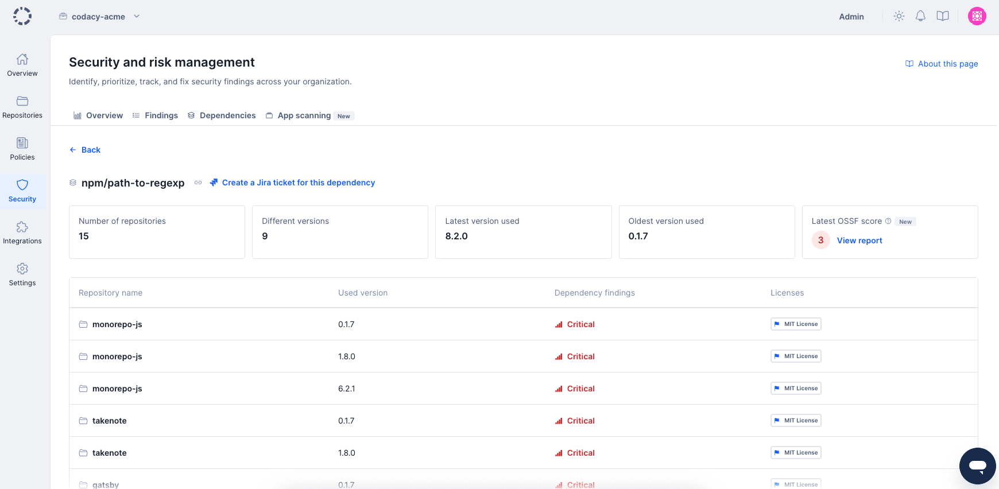
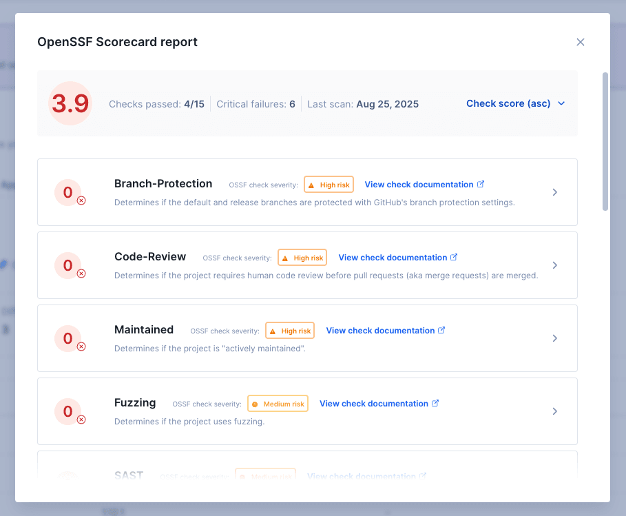
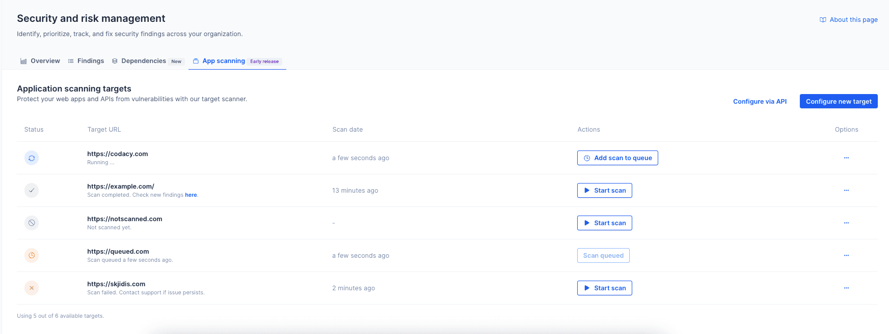
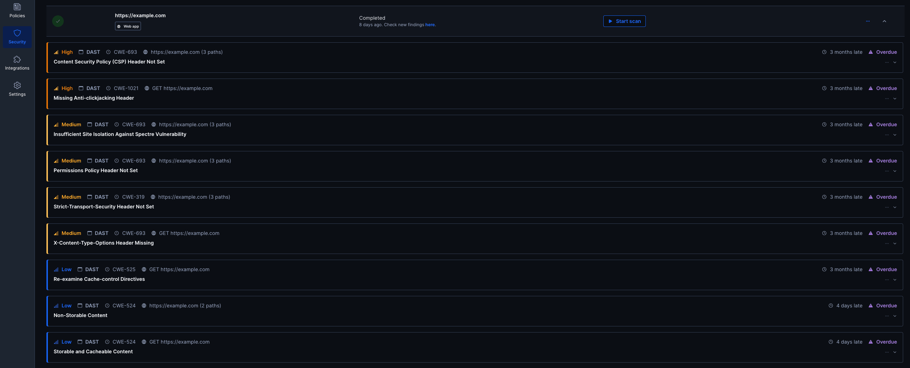

Managing security and risk#
The Security and risk management feature helps you quickly identify, track, and address security across your organization by automatically opening time-bound, prioritized findings whenever security problems are detected in your organization repositories, in your connected Jira instance, or as a result of penetration testing.
Under Security and risk management, you can find the following pages to help you monitor the security of your repositories:
In addition, on these pages, you can share filtered views of findings, export findings as a CSV file, and review severity rules and integration settings
Overview#
The Security and risk management overview page provides a high-level view of the security posture of your organization, including the number of open findings, the distribution of open findings by severity, the history of finding resolution, and a breakdown of the most high-risk repositories and most detected security categories.
Use this page to assess your organization's security posture and its progress over time, identify areas for improvement, and share findings with stakeholders.
To access the overview page, select an organization from the top navigation bar and select Security and risk on the left navigation sidebar.

The overview page includes six panels:
- Open findings overview
- Scan types distribution
- Open findings history
- Activity history
- Top 10 high-risk repositories
- Top 10 common security categories
To limit the information displayed in each panel, use the filter drop-down above the main area, and choose the relevant repositories, or utilise Segments.
Check out how to enable and configure Segments
Open findings overview#
The Open findings overview panel displays the total number of open security findings and the number of findings of each severity, helping you quickly assess the overall security posture of your organization and quickly review findings that are critical or overdue.
Within this same panel, an additional visualization shows the relative distribution of open findings by status, helping you evaluate the distribution of risk across different criteria and identify areas that may need immediate attention.
To access the findings page with the corresponding filter applied, click on a number or bar area.

Scan types distribution#
The Scan types panel shows the relative distribution of open findings by scan type. To access the findings page with the corresponding filter applied, click on a number from the panel.

Open findings history#
The Open findings history graph shows the open findings trends over the past three months, grouped by week and severity. It details the progression of your organization's risk and security posture over time and can, for example, help you understand if the right issues are being addressed.
For a detailed view of the distribution on a specific week, hover over the graph.
Activity history#
The Activity history graph shows weekly counts of open, closed, ignored and unignored findings over the past three months, overlaid on the overall open findings trend. It complements the Open findings history graph with more information, such as the volume of findings addressed each week and a visual representation of the new/closed ratio.
To filter the graph by finding severity, use the drop-down in the top right-hand corner of the panel.
For a detailed view of the counts on a specific week, hover over the graph.

Top 10 high-risk repositories#
The Top 10 high-risk repositories list shows the repositories with the highest number of open findings, ordered by severity.
Note
This panel may list fewer than ten repositories if there are fewer than ten repositories with open findings in the organization or if fewer than ten repositories are selected in the dropdown Repository filter.

Top 10 common security categories#
The Top 10 common security categories list shows the most common security categories of open findings, ordered by count.
To access the findings page with the corresponding filter applied, click on a category.

Findings#
The Security and risk management findings page displays a filtered list of findings. By default, you are shown the findings that are currently opened and this list is sorted by Latest findings found. You can click on the sort dropdown to sort the findings by detection date - latest or oldest. Use this page to review and prioritize findings and track the progress of your security efforts.
To access the findings page, access the overview page and click the Findings tab.

On the left section of the page, besides sorting, you can update the filtering criteria by clicking the Segments , Repositories, Severities, Statuses, Security categories, or Scan types dropdowns above the list.
Check out how to enable and configure Segments
On the right section, you can view the filtered list of findings. Each finding card offers a quick overview of the vulnerability found, including its title, source platform, scan type, security category, and related information such as the repository name, Jira issue key, or affected URL targets. To find out more, click this overview to navigate to the finding details on the source platform.

The same Common Vulnerability and Exposure can be classified with different severities in different sources, like cve.org or NVD, and Trivy uses these and other sources to update their database. As such, there may be situations where the severity attributed to a Finding by Trivy is not in line with a specific source. Subsequent analysis can then close a Finding and re-open it with a different severity, if a Trivy database update occurs.
Sharing a filtered view of findings#
To share the current view of the overview or findings page, click the Copy URL button in the top right-hand corner of the page. This action copies the URL with the current filters applied to the clipboard.
Segments filter won't be considered when sharing the filtered view
Ignoring findings#
This feature is available only to organization admins and organization managers except for findings detected on Git repositories. For those findings, repository permissions are respected
You can ignore a finding using the context menu both in the findings list page and the findings details page. When ignoring a finding you can optionally specify a reason for doing so.
From an organization standpoint, ignoring a finding means that you accept the risk it poses and you're not planning on addressing the issue.
From Codacy's standpoint, ignoring a finding means it will be removed from the metrics featured in the overview page page. Note that the Open Findings history chart will only be changed at the start of next week.
Jira findings can't be ignored in Codacy. You should closed the issue directly in Jira.
Ignoring findings detected on Git repositories will also ignore the issue at the repository level.
You can still see Ignored findings in the findings list, by filtering for the Ignored status in the Statuses dropdown. You can assess which status a finding has at his overview, on the right top corner.
An Ignored finding can be unignored directly from the findings list or by going to the same menu in the finding details page. Note that in this page you can also find out more about who ignored the finding and why, if such a reason was provided.
Unignoring a finding reverts the effects of ignoring it.

Unignoring findings detected on Git repositories will also unignore the issue at the repository level.
Ignoring and unignoring findings are auditable actions.
Exporting findings#
This feature is available only to organization admins and organization managers
To export a list of findings as a CSV file, click the options menu in the top right-hand corner of the page and select Export findings (.csv). The exported list always includes all findings, ignoring any applied filters.
Reviewing severity rules and integration settings#
To review the severity assignment rules or manage the integration with Jira or Slack, click the options menu in the top right-hand corner of the page and select respectively See severity rules or View integrations.
How Codacy manages findings#
Important
To open and close findings, Codacy must detect when the associated issues are introduced and fixed. The detection logic is platform-dependent and is described below.
Codacy opens a new finding whenever a source platform detects a new security issue. The new finding is automatically assigned a severity and a status:
- The priority of the issue on the source platform sets the severity of the finding. In turn, the severity of the finding defines a deadline to close the finding.
- The time to the deadline sets the status of the finding. The finding then moves through different statuses as the deadline is approached, met, or missed.
Codacy closes a finding when the source platform stops detecting the associated security issue.
The following section details when Codacy opens and closes findings for each supported platform.
How Codacy manages findings detected on Git repositories#
Note
To make sure that Codacy detects security issues correctly:
- Enable code patterns belonging to the Security category. These patterns are enabled by default, but may not be on custom configurations.
- Alternatively, apply a coding standard that includes patterns belonging to the Security category.
- Confirm that the latest commits to the default branches of your repositories are analyzed.
Codacy opens a new finding when it detects a new security issue on the default branch of a repository.
Codacy closes a finding in either of the following cases:
- Codacy detects that the associated issue isn't present in the most recent analyzed commit and therefore is fixed
- You ignore the associated issue
- You disable the tool that found the associated issue
Important
Deleting a repository deletes all open findings belonging to that repository.
How Codacy manages findings detected during software composition analysis (SCA)#
Note
To make sure that Codacy detects dependency issues correctly, enable code patterns belonging to the Trivy tool.
Vulnerable dependencies are a specific GIT repository finding. Similarly to other repository findings, Codacy opens an issue whenever a commit is analyzed.
Additionally, Codacy scans your codebase every evening to see if it's affected by any newly discovered vulnerabilities.
Important
The proactive SCA scanning is a business tier feature. If you are a Codacy Pro customer interested in upgrading to gain access to this feature, reach out to our customer success team.
How Codacy manages findings detected on Jira#
Note
- For Codacy to detect Jira issues, you must integrate Jira with Security and risk management.
- Codacy retrieves updates from Jira once a day. If an issue is opened and closed on the same day, Codacy may not detect it.
- To make sure that Codacy detects Jira issues correctly, assign the security label when creating the issue or immediately after.
Codacy opens a new finding when it detects a new Jira issue with a security label (case-insensitive).
Codacy closes a finding when it detects that the associated Jira issue is marked as Closed.
How Codacy manages findings detected during penetration testing#
Note
Penetration testing is available upon request and is provided by a third-party partner. See how to request penetration testing for your organization.
Codacy opens a finding for each security issue detected during a penetration test.
Codacy closes a finding when a subsequent penetration test doesn't detect the underlying security issue.
How Codacy manages findings detected during application scanning (DAST)#
Note
To view application scanning findings, also known as DAST (Dynamic Application Security Testing) findings, you must first generate a DAST report and upload it to Codacy.
Codacy opens a finding for each security issue detected in the DAST report. If subsequent reports identify the same issue, Codacy updates the existing finding.
Codacy closes a finding when it's not detected in a subsequent DAST report. If a previously closed issue reappears in a later report, Codacy reopens the finding.
Finding severities and deadlines#
The following table defines finding severities and the default number of days to the deadline to fix the associated security issue, based on the importance of the underlying issue:
| Finding severity |
Days to deadline |
Underlying Codacy issue severity |
Underlying Jira issue priority 1 |
|---|---|---|---|
| Critical | 30 | Critical | Highest |
| High | 60 | - | High |
| Medium | 90 | Medium | Medium |
| Low | 120 | Minor | Low and other/custom |
1 Those listed are the default Jira priority names. If you rename a default Jira priority, it keeps the correct mapping.
Customize deadlines#
This feature is available only to organization admins and organization managers.
You can configure your findings deadline by clicking on the "Configure SLAs" button, on the right corner of the page.

In the open configuration modal you'll be able to input your deadline preferences for each severity. Each deadline must be between a minimum of 1 day and a maximum of 9999 days.
As soon as changes are saved, your open findings statuses will be updated accordingly. You are also able to reset to Codacy default deadline values (see table above) at any time.
Finding statuses#
The following table describes how finding statuses map to deadlines:
| Status category | Finding status | Deadline |
|---|---|---|
| Open | Overdue | The deadline has been missed |
| Due soon | Fewer than 15 days to the deadline | |
| On track | 15 days or more to the deadline | |
| Closed | Closed late | Closed after the deadline |
| Closed on time | Closed before the deadline |
Supported security categories#
Note
Due to a recent update, some issues may be temporarily assigned the Not yet categorized category. To categorize these issues, you can reanalyze the default branch of the relevant repository. For a list of repositories that have issues with this category, use the Security category filter on the Findings page. Note that some issues just don't have a security category. These issues will remain Not yet categorized.
Each Codacy issue reported by Security and risk management belongs to one of the following security categories:
| Security category | Description |
|---|---|
| Android | Android-specific security issues. |
| Authentication | Broken authentication and authorization attacks consist in gaining access to accounts that allow disclosing sensitive information or performing operations that could compromise the system. |
| Command Injection | Command injection attacks aim to execute arbitrary commands on the host operating system. |
| Cookies | Security issues related to insecure cookies. |
| Cryptography | Cryptography attacks exploit failures related to cryptography (or lack thereof), potentially leading to exposure of sensitive data. |
| CSRF | Cross-Site Request Forgery (CSRF) attacks force an end user to execute unwanted actions on a web application in which they're currently authenticated. |
| Denial of Service | Denial of Service (DoS) attacks make a resource (site, application, server) unavailable for legitimate users, typically by flooding the resource with requests or exploiting a vulnerability to trigger a crash. |
| File Access | File access security issues may allow an attacker to access arbitrary files and directories stored on the file system such as application source code, configuration, and critical system files. |
| HTTP Headers | Insecure HTTP headers are a common attack vector for malicious users. |
| Input Validation | Client input should always be validated to prevent malformed or malicious data from entering the workflow of an information system. |
| Insecure Modules and Libraries | Security issues related to modules or libraries that are malicious or can potentially include vulnerabilities. |
| Insecure Storage | Security issues related to insecure storage of sensitive data. |
| Malicious Code | Security issues related to code patterns that are potentially unsafe. |
| Mass Assignment | Unprotected mass assignments are a Rails feature that could allow an attacker to update sensitive model attributes. |
| Regex | Regular expressions can be used in Denial of Service attacks, exploiting the fact that in most regular expression implementations the computational load grows exponentially with input size. |
| Routes | Badly configured routes can give unintended access to an attacker. |
| SQL Injection | SQL injection attacks insert or "inject" malicious SQL queries into the application via the client input data. |
| SSL | Security issues related with old SSL versions or configurations that have known cryptographic weaknesses and should no longer be used. |
| Unexpected Behaviour | Security issues related to potentially insecure system API calls. |
| Visibility | Logging should always be included for security events to better allow attack detection and help defend against vulnerabilities. |
| XSS | Cross-Site Scripting (XSS) attacks inject malicious client-side scripts into trusted websites that are visited by the end users. |
| Other | Other language-specific security issues. |
Scan types#
Security and risk management classifies each finding with a Scan type, indicating the specific source or method used to detect the finding. This information helps you understand the origin of the finding and the context in which the underlying issue was detected.
The following table lists the available scan types and their descriptions:
| Scan type | Description |
|---|---|
| Code Scanning | Analysis of source code for vulnerabilities without execution. Also known as Static Application Security Testing (SAST). |
| Software Composition Analysis | Analysis of external libraries and packages for malicious intent, vulnerabilities or outdated versions. |
| Exposed Secrets | Detection of sensitive information, such as passwords or API keys, inadvertently included in the code. |
| Infrastructure as Code | Detection of configuration issues within infrastructure-as-code (IaC) files that could pose risks. |
| Penetration Testing | Results from penetration testing to find security vulnerabilities in running code. |
| App Scanning | Simulated attacks on live applications to find vulnerabilities. Also known as Dynamic Application Security Testing (DAST). |
Languages checked for security issues#
Security and risk management supports checking the languages and infrastructure-as-code platforms below for any Codacy security issues reported by the corresponding tools:
| Language | Tools that report security issues |
|---|---|
| Apex | PMD, Semgrep 1 |
| AWS CloudFormation | Checkov, Trivy 2 |
| C | Clang-Tidy 3, Cppcheck, Flawfinder, Semgrep 1, Trivy |
| C# | SonarC#, Semgrep 1, Trivy |
| C++ | Clang-Tidy 3, Cppcheck, Flawfinder, Semgrep 1, Trivy |
| Dart | Trivy |
| Dockerfile | Hadolint, Semgrep 1, Trivy |
| Elixir | Credo, Trivy |
| GitHub Actions | Semgrep 1 |
| Go | Gosec 3, Semgrep 1, Trivy |
| Groovy | CodeNarc |
| Helm | Trivy 2 |
| Java | Semgrep 1, SpotBugs 3 4, Trivy |
| JavaScript | ESLint 5, Semgrep 1, Trivy |
| JSON | Trivy |
| Kotlin | Semgrep 1 |
| Kubernetes | Trivy 2 |
| Objective-C | Clang-Tidy 3 |
| PHP | PHP_CodeSniffer, PHP Mess Detector, Semgrep 1, Trivy |
| PowerShell | PSScriptAnalyser |
| Python | Bandit, Prospector, Pylint, Ruff, Semgrep 1, Trivy |
| Ruby | Brakeman, RuboCop, Semgrep 1, Trivy |
| Rust | Semgrep 1, Trivy |
| Scala | Codacy Scalameta Pro, Semgrep 1, SpotBugs 3 4 |
| Swift | Semgrep 1 |
| Shell | ShellCheck Semgrep 1 |
| Terraform | Semgrep 1, Trivy |
| Transact-SQL | TSQLLint |
| TypeScript | ESLint 5, Semgrep 1, Trivy |
| Visual Basic | SonarVB |
Dependencies#
Important
The dependency tab is a business-tier feature. If you are a Codacy Pro customer interested in upgrading to gain access to this feature, contact our customer success team.
The Security and risk management Dependencies page displays a unified view of all dependencies used by your repositories.
To access the dependencies page, access the overview page and click the Dependencies tab.

When viewing dependencies, you'll be presented with a list of the dependencies used by all repositories in your organization. For each dependency, you'll be able to see how many repositories are making use of it, how many different versions you are using across all repositories, and how many security findings were found due to the presence of that dependency.
You can sort the dependencies list using the sort dropdown to prioritize dependencies based on your security assessment needs:
- Highest vulnerability (default) - Dependencies with the most critical security findings appear first
- Lowest OSSF score - Dependencies with the lowest OSSF Scorecard security scores appear first, helping you identify dependencies that may not follow security best practices
You're also able to click any dependency to find out more information about it.

The dependency overview page offers a quick bird's-eye view of that particular dependency. You'll be able to see all different versions that are being used, including which repository is using them, the oldest and most recent versions you're leveraging, as well as the highest criticality of security issues, the license 6 applied to any particular version of that dependency, and the OSSF Scorecard security assessment.
OSSF Scorecard#
The OSSF Scorecard feature provides additional security insights for your dependencies by displaying security assessment data from the Open Source Security Foundation (OSSF) Scorecard project.
The OSSF Scorecard is an automated tool that evaluates open source repositories against a comprehensive set of security best practices. It performs various checks on a dependency's repository to assess whether the project follows security best practices and helps determine if the dependency is safe for consumption.
When available, OSSF Scorecard information appears on the dependency overview page, providing you with:
- Overall security score - A numerical score indicating the overall security posture of the dependency
- Individual check results - Detailed results for specific security practices such as:
- Code review practices
- Dependency update policies
- Security policy documentation
- Vulnerability disclosure processes
- Branch protection configurations
- Binary artifact verification
- Token permissions and usage
This information helps you make informed decisions about the security risks associated with your dependencies and identify which dependencies may require additional scrutiny or alternative options.

1: Semgrep supports additional security rules when signing up for Semgrep Pro.
2: Currently, Trivy only supports scanning YAML files on this platform.
3: Supported as a client-side tool.
4: Includes the plugin Find Security Bugs.
5: Includes the plugins no-unsanitized, security, security-node, and xss.
6: Visit the supported languages and tools page for a list of supported languages.
App scanning#
Important
App scanning is a business feature. If you are a Codacy Pro customer, contact our customer success team to access a short trial.
The Security and risk management > App scanning page allows organizations to scan Web Applications and APIs for security vulnerabilities. This feature is part of Codacy's Dynamic Application Security Testing (DAST) capabilities, powered by ZAP.
To access the App scanning page, go to the Overview page and click the App scanning tab.

App scanning analyzes applications in production or production-like environments to help identify vulnerabilities such as misconfigurations, insecure authentication, or other security issues that occur in real-world usage. Because it doesn't rely on access to source code, its language-agnostic and useful for validating security across your entire stack.
Codacy supports two types of scanning:
-
Web application scans perform baseline, non-intrusive analysis. These scans are safe for production environments and detect surface-level issues such as:
- Missing security headers
- Insecure cookie configurations
- Information disclosure through HTTP response headers
- Exposure of sensitive or misconfigured files
-
API scans simulate real-world attacks against your API endpoints. These are more aggressive and best suited for non-production environments, such as staging or development. API scans provide deeper insights into runtime behavior and potential vulnerabilities, such as:
- Broken authentication or authorization controls
- Injection vulnerabilities (SQL or command injection)
- Exposure of sensitive data in API responses
- Insecure CORS or HTTP method configurations
Note
Already using ZAP? Upload your results via the API.
Creating an App Scanning target#
Important
Do not run API scans on production enviroments as our API scanners may cause potential downtime.
Our DAST API scanner performs active security testing by sending a large number of requests to your application. When using authenticated API scanning, this activity can be even more intensive, as ZAP explores and probes more of your API surface.
Depending on how your target environment is configured, this may:
- Trigger rate limiting or throttling
- Appear as a high volume of traffic, similar to a load test
- Lead to incomplete scan results if key endpoints are blocked or limited
We recommend running scans in a test or staging environment, or coordinating with your infrastructure team to ensure that your environment can safely handle the load.
When creating a scan target, you'll be able to choose between a Web App or an API. Configuring a Web App will only require a target URL, while APIs will have other requirements:
- REST APIs, which require a publicly accessible OpenAPI specification URL.
- GraphQL APIs, where the schema is inferred from the default path
{targetUrl}/graphql.
API targets optionally support header-based authentication. As you create a target, keep in mind you may not be able to view or change certain fields later (to change your configurations you may need to delete and create a new target).
Note
If exposing your API specification isn't feasible for your team, let us know via support or your account representative.
How to scan a target#
You can initiate scans in two ways: - From the App scanning tab in the Security and risk management dashboard - By automating scans using Codacy's API
Important
Only admins and organization managers can create targets and start scans, both in-app and via the API.
Each organization can have up to 6 active scan targets. If you need additional capacity, contact your customer success representative.
Scans are triggered manually through the UI and are queued before execution. You can queue one single scan per target it will run sequentially. There is no limit to the number of scans you can run on a target, in order to support your deployment needs.
Once a scan completes, results will be available under the Findings tab. Use the Scan types > DAST/App scanning filter to view relevant findings.
Important
Depending on the complexity of the target, DAST scans can take a significant amount of time to complete. Codacy may enforce timeouts to ensure platform stability and fair resource distribution.
Important
Failed scans are retried based on the failure reason. Retries are added back to the queue automatically and processed when capacity allows.
Note
Currently, DAST findings are only visible to admin and organization admin roles.
Findings results for your DAST scans#
As previously mentioned, once a scan completes, results will be available under the Findings tab. Use the Scan types > DAST/App scanning filter to view relevant findings. Additionaly, you can click on a configured target to expand all of that target's results.

Follow our roadmap for updates on this feature.
Share your feedback
Did this page help you?
Thanks for the feedback! Is there anything else you'd like to tell us about this page?
255 characters left
We're sorry to hear that. Please let us know what we can improve:
255 characters left
Alternatively, you can create a more detailed issue on our GitHub repository.
Thanks for helping improve the Codacy documentation.
Edit this page on GitHub if you notice something wrong or missing.
If you have a question or need help please contact support@codacy.com.